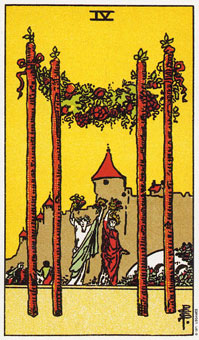

权杖四暗示在一个新家，或工作环境上安顿下来。
权杖四描出一个坚固的家庭或工作环境，欢乐与分享是每天生活的一部分。在这张牌上，人们自由来去，带着固有的渴望、热情和乐观，在阳光下跳舞、庆祝。
有一个迎宾花圈穿在四支权杖的顶端，跳舞的人们在庆祝时挥动着更多的花朵。
城堡是坚固的暗示，又是它也表示权杖类型的热情正被导引进入家园。例如，你可能重新装修或粉刷的家里，是它更适合你现在的需要。
这张牌对搬入温暖又充满支持的家或工作环境是正面的指示。已经在那环境中的人觉得呆在那里很舒适，并且欢迎及支持新来的人。当权杖四出现在圣杯三的旁边时，它表示一个欢庆，或志同道合的人聚集起来，显示生气勃勃与喜悦。
大体上的意义
权杖四代表坚固--将权杖三中所决定的计划变得稳固或实在的行为。它经常暗示搬入新家或换工作，也表示你在目前的环境中安定下来。
乔安来找我占卜时，已经住在小平顶屋三年了。他抱怨他的室友对那个家很少付出，甚至拒绝拿邮件进来。看完纸牌的配置后，我指出乔安本身并不特别想要在那屋子安定下来。他同意。因为权杖四出现在不久的未来的位置，所以我可以看出他即将把这个家变得更像一个家。算过之后，他立刻决定把白色的墙改成它喜欢的颜色，并调整家具摆设，让它更舒适。
两性关系上的意义
在两性关系的算法中，权杖四指出你正在稳固你的两性关系。四根深植在地上的权杖呈现一个更深的承诺或确实坚固的关系。城堡表示家庭的安定力，而在前庭的人们则显示火性类型的好动本性。
倒立的权杖四
倒立的权杖四表示你正要离开一个家园或工作环境，不过，这个新环境可能大不同于你正要离开的环境。它也暗示你在新环境中会少有安定性。譬如，你可能到国外渡十二个月的假，而在期间走访六或七个国家。倒立的权杖表示你无法在任何特别的地方安定下来，因为那四根权杖已不在牢固在地上。
倒立的权杖四也可能表示一个暂时的情境。例如，在找到比较长远的工作前，你可能做些暂时性工作。它也可表示缺乏稳定性的计划，有时暗示你必须学着欣赏在家或工作环境中所拥有的。正立纸牌的所有的可能性都是明显的，可惜你不参与周遭环境，或为它付出。
就好像你不属于周遭人们，你只是路过这个社区。
在人际关系的算法中，倒立的权杖四指出伴侣关系没有任何发展，也许成长在权杖三的期间中断，果真如此，应该回到权杖三的课题上。